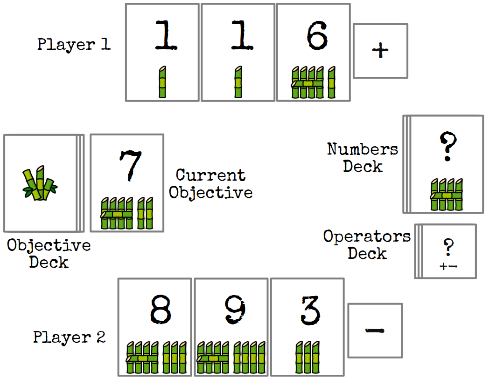
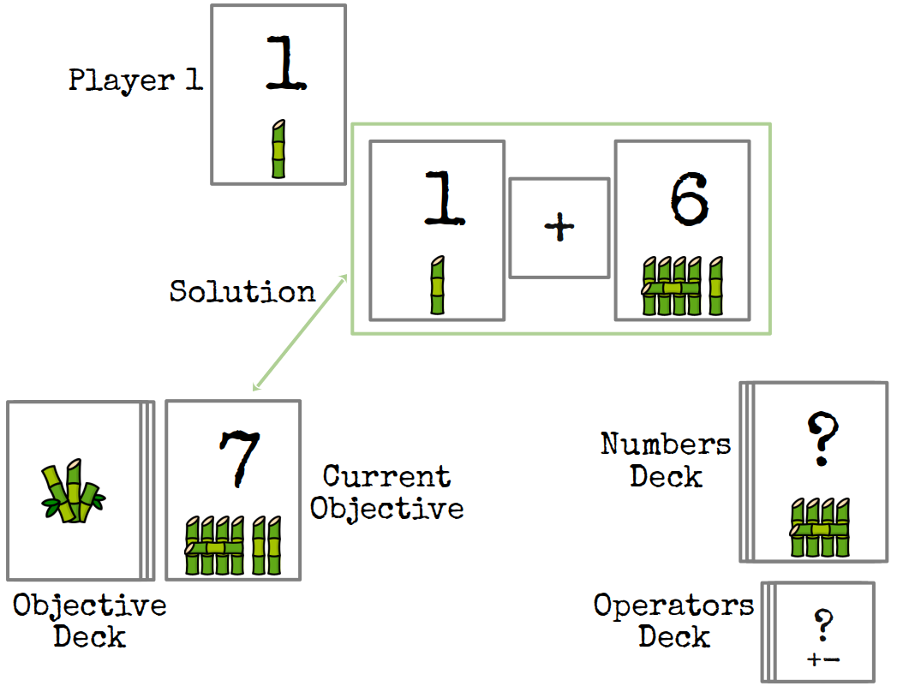
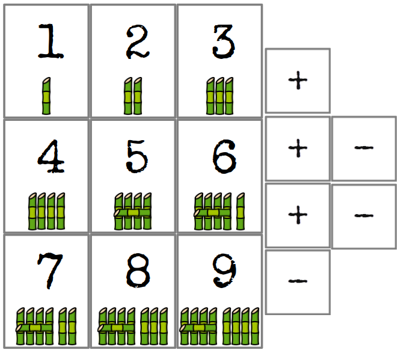

Bamboo
Bamboo is a card game for 2-4 players.
The idea of the game comes from the purpose to get children training math and computation through a fun and engaging way.
It is a game of strategy and luck, where players try to match an objective card with a combination of number and operator cards. The goal of the game is to get number and objective cards in the player’s solution pile. The player who has the most wins.
Bamboo and A.I.
Bamboo started as a paper drafted idea, but at some point I felt the need of balancing the game, and simulate how it might behave with different players, different amount of cards, different values of cards, and so on.
Here it is where the TAG (Tabletop Games) framework kicked in and played its proper role. TAG is a JAVA framework that allows to simulate games and evaluate different strategies. After an initial basic understanding of the framework, I started the journey of implementing the Bamboo game in TAG. By implementing the game logic following TAG patterns, I am now able to simulate with the A.I. framework how the game would behave (statistically speaking) with a different types and amount of cards and players. That's how I came up with arbitrary setup amount of cards, amount of objective cards in the deck, copies of each number card, and so on.
I would recommend TAG framework to all board game designers and developers after my experiences with it.
Bamboo implementation in TAG is available here.
Note: a huge mention must be done afterwards: nothing could have happened of what was said above if it was not thanks for the collaboration with my dear friend and colleague moio.
- 3 number cards
- 1 operator cards per player
- 1 new objective card drawn, face-up

The active player can do one of the following:
- Provide a solution
- Pass the turn
During their turn, a player finds a combination of number and operator cards to match the objective card.
Operations are evaluated linearly, without parentheses:
- Example: 7-4+2=5 is valid
- Example: 7-4+2=1 evaluated as 7-[4+2]=7-6=1 is not valid.
The solution is explained and evaluated by the other players. If it is valid and confirmed, then:
- Used number cards for the solution are placed in the solution pile of the player who solved it.
- The objective card goes into the same player’s solution pile.
- Operator cards of all players are reshuffled into the operator draw pile.
- Players restore their hand:
- The solving player draws number cards until they have 3. If they have more, they can keep them for the next turn
- The solving player draws 1 operator cards
- Players who didn't solve must discard excess number cards until they have 3. All excess cards go into the solution pile of the player who solved.
- Players who didn't solve must draw 1 operator card

The passing player can do one of the following:
- Draw 1 number card from the draw pile and draw 1 operator card from the draw pile.
- Draw 2 number cards from the number draw pile
- Draw 2 operator cards from the operator draw pile
- Swap all cards: put back current number and operator player's cards and redraw from the decks until they have the same amount as before
When the number card deck or the objective card deck is empty, finish the current round. If someone has solved, proceed to the end-of-turn steps. Otherwise, discard any unused cards and evaluate the winner.
The player with the most number cards in their solution pile wins.
- 45 number cards: 5 cards for each number, from 1 to 9
- 32 operator cards: 16 "+" operator cards and 16 "-" operator cards
- 20 objective cards: 1 cart for each number, from 1 to 20
